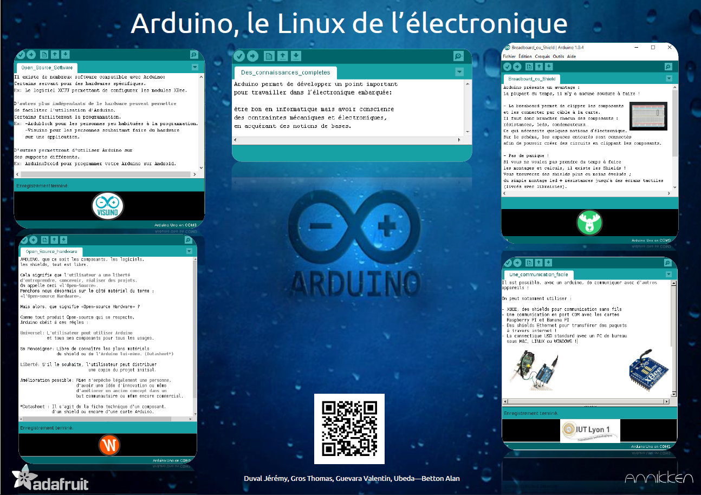

Dans cette page, vous trouverez des informations à propos de nos projets tuteurés de S1.
Ces derniers consistent en la réalisation d’un poster où d’un site web, en groupe, sur un sujet donné par des professeurs. Vous pouvez trouver plus d’informations ici.
Mon projet tuteuré de S1 consiste à présenter toute les possibilités d’Arduino, afin de donner envie aux étudiant de réaliser leurs prochains projets avec.
Avec mon groupe (de 4 personnes), nous avons choisi de réaliser le poster ci-dessous :

Nous avons quatre parties : shields/bredboard (dont je m’occupe), la communcation via Arduino, l’open source Hardware, l’open source Software.
Ces parties ont été rédigées dans l’IDE Arduino.
Le QR-code permet de rediriger vers un site web en complément, dans le cas où la personne serai intéressée et souhaiterai plus ample informations.